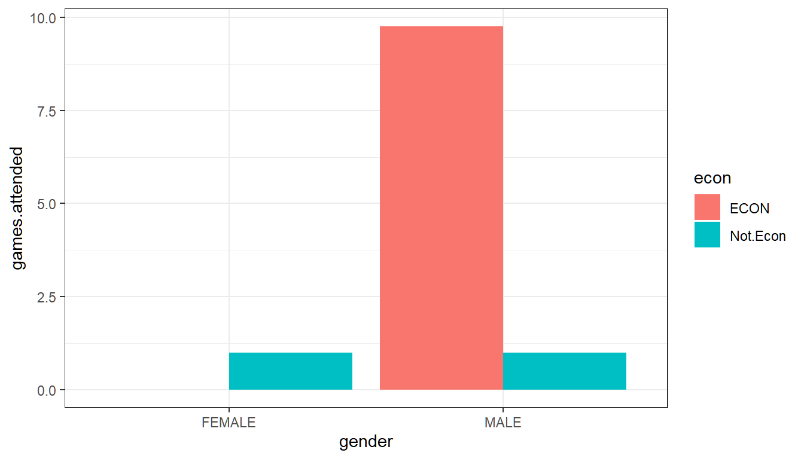

Chapter 2 Dataset, Tables and Graphs
2.1 Opening a Dataset
Go back to fan’s REconTools Package, R Code Examples Repository (bookdown site), or Intro Stats with R Repository (bookdown site).
We have a dataset on basketball teams. The dataset, Basketball.csv, can be downloaded here.
We will load in the dataset and do some analysis with it.
2.1.1 Paths to Data
Relative Path
The dataset is stored in a csv file. The folder structure for this file we are working inside and the data file is:
- main folder: Stat4Econ
- subfolder: data
- file: Basketball.csv
- subfolder: descriptive
- file: DataBasketball.ipynb (the jupyter notebook file)
- file: DataBasetball.html (the html version of the jupyter notebook file
- subfolder: data
overall this means: - the csv file’s location is: ‘/Stat4Econ/descriptive/data/Basketball.csv’ - the working R code file’s location is: ‘/Stat4Econ/descriptive/data/DataBasketball.ipynb’
Given this structure, to access the Basketball.csv dataset, we need to go one folder up from our current subfolder to the mainfolder, and then choose the data subfolder, and the Basketball.csv file in the subfolder.
Absolute Path
If these files are not in the same main folder but are in different locations on your computer, you can find the full path to the csv path and copy paste the path below in between the single quotes.
search on google to find out how to get the full path to file: - google search for find full path for file on mac + this might end up looking like: ‘/Users/fan/Downloads/Basketball.csv’ - google search for find full path for file on PC + this might end up looking like: ‘C:/Users/fan/Documents/Dropbox/Basketball.csv’
Using Relative path to load in data
We will load in the data using base R read.csv function.
# We can load the dataset in first by setting our directory, then loading in the dataset
basetball_data <- read.csv('data/Basketball.csv')## ilkid year firstname lastname team leag gp
## Length:21959 Min. :1946 Length:21959 Length:21959 Length:21959 Length:21959 Min. : 1.00
## Class :character 1st Qu.:1974 Class :character Class :character Class :character Class :character 1st Qu.:29.00
## Mode :character Median :1988 Mode :character Mode :character Mode :character Mode :character Median :60.00
## Mean :1986 Mean :51.91
## 3rd Qu.:1999 3rd Qu.:76.00
## Max. :2009 Max. :90.00
## minutes pts oreb dreb reb asts stl
## Min. : 0.0 Min. : 0.0 Min. : 0.00 Min. : 0.0 Min. : 0.0 Min. : 0.0 Length:21959
## 1st Qu.: 275.5 1st Qu.: 113.0 1st Qu.: 0.00 1st Qu.: 1.0 1st Qu.: 44.0 1st Qu.: 20.0 Class :character
## Median :1038.0 Median : 386.0 Median : 22.00 Median : 60.0 Median : 160.0 Median : 71.0 Mode :character
## Mean :1204.1 Mean : 531.1 Mean : 49.79 Mean : 117.8 Mean : 229.7 Mean : 118.1
## 3rd Qu.:2009.0 3rd Qu.: 811.0 3rd Qu.: 75.00 3rd Qu.: 180.0 3rd Qu.: 333.0 3rd Qu.: 167.0
## Max. :3882.0 Max. :4029.0 Max. :587.00 Max. :1538.0 Max. :2149.0 Max. :1164.0
## blk turnover pf fga fgm fta ftm
## Length:21959 Length:21959 Min. : 0.0 Min. : 0.0 Min. : 0.0 Min. : 0.0 Min. : 0.0
## Class :character Class :character 1st Qu.: 43.0 1st Qu.: 106.0 1st Qu.: 43.0 1st Qu.: 30.0 1st Qu.: 20.0
## Mode :character Mode :character Median :118.0 Median : 345.0 Median : 148.0 Median : 99.0 Median : 70.0
## Mean :123.6 Mean : 452.5 Mean : 204.2 Mean : 146.9 Mean :109.6
## 3rd Qu.:193.0 3rd Qu.: 696.0 3rd Qu.: 313.0 3rd Qu.: 218.0 3rd Qu.:161.0
## Max. :386.0 Max. :3159.0 Max. :1597.0 Max. :1363.0 Max. :840.0
## tpa tpm
## Min. : 0.00 Min. : 0.0
## 1st Qu.: 0.00 1st Qu.: 0.0
## Median : 2.00 Median : 0.0
## Mean : 38.07 Mean : 13.1
## 3rd Qu.: 27.00 3rd Qu.: 7.0
## Max. :678.00 Max. :269.02.2 One Variable Graphs and Tables
Go back to fan’s REconTools Package, R Code Examples Repository (bookdown site), or Intro Stats with R Repository (bookdown site).
# For Data Structures
library(tibble)
# For Data Manipulations
library(dplyr)
# For Reading/Loading Data
library(readr)
# For plotting
library(ggplot2)
# For Additional table output
# install.packages("knitr")
library(knitr)Let’s load in the dataset we created from the in-class survey.
# We have several factor variables, we can set them as factor one by one
df_survey[['gender']] <- as.factor(df_survey[['gender']])
# But that is a little cumbersome, we can using lapply, a core function in r to do this for all factors
factor_col_names <- c('gender', 'major', 'commute', 'games.any', 'econ')
df_survey[factor_col_names] <- lapply(df_survey[factor_col_names], as.factor)
# Check Variable Types
str(df_survey)## tibble [10 x 10] (S3: spec_tbl_df/tbl_df/tbl/data.frame)
## $ ID : num [1:10] 1 2 3 4 5 6 7 8 9 10
## $ ROW : num [1:10] 3 4 4 4 2 1 2 3 3 4
## $ COL : num [1:10] 1 2 10 1 6 7 6 6 3 13
## $ gender : Factor w/ 2 levels "FEMALE","MALE": 2 1 2 2 1 2 2 2 1 1
## $ years.in.houston: num [1:10] 21 21 22 22 20 3 25 20 5 20
## $ major : Factor w/ 5 levels "CONSUMERSCIENCE",..: 2 3 2 2 2 5 2 1 4 2
## $ commute : Factor w/ 1 level "YES": 1 1 1 1 1 1 1 1 1 1
## $ games.attended : num [1:10] 0 2 0 14 0 0 25 2 0 0
## $ games.any : Factor w/ 2 levels "Has.Attended",..: 2 1 2 1 2 2 1 1 2 2
## $ econ : Factor w/ 2 levels "ECON","Not.Econ": 1 2 1 1 1 2 1 2 2 1
## - attr(*, "spec")=
## .. cols(
## .. ID = col_double(),
## .. ROW = col_double(),
## .. COL = col_double(),
## .. gender = col_character(),
## .. years.in.houston = col_double(),
## .. major = col_character(),
## .. commute = col_character(),
## .. games.attended = col_double(),
## .. games.any = col_character(),
## .. econ = col_character()
## .. )2.2.1 Categorical/Discrete
Using categorical/discrete variables, such as Major, Gender, Recent arrival or not, etc, we can generate frequency tables.
- Nominal Variables: These are categorical variables like name, or address, or major.
- Ordinal Variables: These are categorical variables like age, grade in school, that could be ordered sequentially.
The frequency table shows in separate columns (or rows) the name for all the categories for that categorical variable, and show next to these categories the number of times that category appears in the dataset. This is called a frequency table because frequencies are shown for each category. So if we show a one-way frequency for majors, there would be four rows for the four unique majors from our survey of 10 students, and we would write down the number of students in each of the majors out of the 10 students.
Rather than showing frequencies, we can also show ratios or percentages by dividing the number of observations in each category by the total number of observations in the survey.
Graphically, we can show the results from these one-way frequency tables using bar charts and pie charts. The bar charts would have separate bars for each category, and the heights of the bars would show the number of observations in that category, or the fraction of individuals in the categorical. The relative heights of bars are the same whether we show the frequencies or the fractions/ratios. A pie chart might give a more direct visual sense of the fraction of observations in each category.
2.2.1.1 A Frequency Table and a Bar Graph
2.2.1.2 Using R Functions to Generate Multiple Frequency Tables
# There are Multiple Categorical Variables in the dataset
# Would be nice if we can generate frequency tables for all of them easily
# Let's create a list of that are categorical
categorical.nomial.list <- c('gender', 'major', 'games.any', 'commute', 'econ')# Let's Write a Function, not that we need to, but let's do it
# We can give the function any name, here: dplyr.freq.table
dplyr.freq.table <- function(df, cate.var.str){
# A print Statement
print(sprintf("From Dataset: %s, Freq. Table for Variable: %s", deparse(substitute(df)), cate.var.str))
# Note below: !!sym(cate.var.str), because cate.var.str is string
freq.table <- df %>%
group_by(!!sym(cate.var.str)) %>%
summarise (frequency.count = n()) %>%
mutate(proportions = frequency.count / sum(frequency.count))
# Function returns
return(freq.table)
}
# Let's call test this function and generate our earlier table
dplyr.freq.table(df = df_survey, cate.var.str = 'gender')## [1] "From Dataset: df_survey, Freq. Table for Variable: gender"# Let's Now Use our function to generate Multiple Frequency Tables
# We will first use a explicit loop
for (ctr in seq_along(categorical.nomial.list)) {
freq.table <- dplyr.freq.table(df = df_survey, cate.var.str = categorical.nomial.list[ctr])
print(freq.table)
}## [1] "From Dataset: df_survey, Freq. Table for Variable: gender"
## [1] "From Dataset: df_survey, Freq. Table for Variable: major"
## [1] "From Dataset: df_survey, Freq. Table for Variable: games.any"
## [1] "From Dataset: df_survey, Freq. Table for Variable: commute"
## [1] "From Dataset: df_survey, Freq. Table for Variable: econ"Using Lapply to Generate Multiple Frequency Tables with a Single Line:
# We will now use lapply, the single line loop tool in R
# Below, we are plugging each element of the list one by one into the function
# dplyr.freq.table, the first argument of the function is the dataset name
# which is fixed as df = df_survey
lapply(categorical.nomial.list,
dplyr.freq.table,
df = df_survey)## [1] "From Dataset: df_survey, Freq. Table for Variable: gender"
## [1] "From Dataset: df_survey, Freq. Table for Variable: major"
## [1] "From Dataset: df_survey, Freq. Table for Variable: games.any"
## [1] "From Dataset: df_survey, Freq. Table for Variable: commute"
## [1] "From Dataset: df_survey, Freq. Table for Variable: econ"## [[1]]
##
## [[2]]
##
## [[3]]
##
## [[4]]
##
## [[5]]2.2.2 Continuous/Quantitative
Graphically, we can show a continuous variable using a histogram. This could be test scores, temperatures, years in Houston, etc. This involves first creating a categorical/discrete variable based on the continuous variable. Since the underlying continuous variable is ordered (low to high temperature unless major which is not ordered), the categorical/discrete variable we generate is an ordered categorical variable (majors could be called unordered categorical variable).
2.2.2.1 Histogram with Lapply
To generate the histogram, we: 1. Make sure that all observations belongs to one category + no observations belonging to no categories + each observation only belongs to one category 2. Each category is equidistance along the continuous variable’s original scale. 3. Then we create a bar graph where each bar is a category, and the height of the bar represents the number of observations within that category.
# We will write a histogram function
ggplot.histogram <- function(df, cts.var.str){
# Figure Size
options(repr.plot.width = 4, repr.plot.height = 3)
# Figure Title
title <- sprintf("Histogram for %s in %s", cts.var.str, deparse(substitute(df)))
# We have in our 10 student survey only 10 observations
# We can still generate a histogram for our continuous variables
# Will only use three bins
histogram.3bins <- ggplot(df_survey, aes(x=!!sym(cts.var.str))) +
geom_histogram(bins=3) +
labs(title = paste0(title),
caption = 'In Class Survey of 10 Students\n3 bins') +
theme_bw()
# obtain the data in the plot
plot_data <- ggplot_build(histogram.3bins)
# the dataframe below contains all the information for the histogram
# bins and number of observations in each bins
plot_dataframe <- plot_data$data[[1]]
# return outputs
return(list(gghist=histogram.3bins, hist.df=plot_dataframe))
}# Now the list of continuous Variables and calling the function with lapply
cts.list <- c('years.in.houston', 'games.attended')
# lapply
results <- lapply(cts.list,
ggplot.histogram,
df = df_survey)
# Show results
for (ctr in seq_along(cts.list)){
print(results[ctr])
}## [[1]]
## [[1]]$gghist##
## [[1]]$hist.df
## y count x xmin xmax density ncount ndensity flipped_aes PANEL group ymin ymax colour fill size linetype alpha
## 1 2 2 0 -5.5 5.5 0.01818182 0.25 0.25 FALSE 1 -1 0 2 NA grey35 0.5 1 NA
## 2 0 0 11 5.5 16.5 0.00000000 0.00 0.00 FALSE 1 -1 0 0 NA grey35 0.5 1 NA
## 3 8 8 22 16.5 27.5 0.07272727 1.00 1.00 FALSE 1 -1 0 8 NA grey35 0.5 1 NA
##
##
## [[1]]
## [[1]]$gghist##
## [[1]]$hist.df
## y count x xmin xmax density ncount ndensity flipped_aes PANEL group ymin ymax colour fill size linetype alpha
## 1 8 8 0.0 -6.25 6.25 0.064 1.000 1.000 FALSE 1 -1 0 8 NA grey35 0.5 1 NA
## 2 1 1 12.5 6.25 18.75 0.008 0.125 0.125 FALSE 1 -1 0 1 NA grey35 0.5 1 NA
## 3 1 1 25.0 18.75 31.25 0.008 0.125 0.125 FALSE 1 -1 0 1 NA grey35 0.5 1 NA2.3 Multiple Variables Graphs and Tables
Go back to fan’s REconTools Package, R Code Examples Repository (bookdown site), or Intro Stats with R Repository (bookdown site).
# For Data Manipulations
library(tidyverse)
# For Additional table output
# install.packages("knitr")
library(knitr)Let’s load in the dataset we created from the in-class survey.
# We have several factor variables, we can set them as factor one by one
df_survey[['gender']] <- as.factor(df_survey[['gender']])
# But that is a little cumbersome, we can using lapply, a core function in r to do this for all factors
factor_col_names <- c('gender', 'major', 'commute', 'games.any', 'econ')
df_survey[factor_col_names] <- lapply(df_survey[factor_col_names], as.factor)
# Check Variable Types
str(df_survey)## tibble [10 x 10] (S3: spec_tbl_df/tbl_df/tbl/data.frame)
## $ ID : num [1:10] 1 2 3 4 5 6 7 8 9 10
## $ ROW : num [1:10] 3 4 4 4 2 1 2 3 3 4
## $ COL : num [1:10] 1 2 10 1 6 7 6 6 3 13
## $ gender : Factor w/ 2 levels "FEMALE","MALE": 2 1 2 2 1 2 2 2 1 1
## $ years.in.houston: num [1:10] 21 21 22 22 20 3 25 20 5 20
## $ major : Factor w/ 5 levels "CONSUMERSCIENCE",..: 2 3 2 2 2 5 2 1 4 2
## $ commute : Factor w/ 1 level "YES": 1 1 1 1 1 1 1 1 1 1
## $ games.attended : num [1:10] 0 2 0 14 0 0 25 2 0 0
## $ games.any : Factor w/ 2 levels "Has.Attended",..: 2 1 2 1 2 2 1 1 2 2
## $ econ : Factor w/ 2 levels "ECON","Not.Econ": 1 2 1 1 1 2 1 2 2 1
## - attr(*, "spec")=
## .. cols(
## .. ID = col_double(),
## .. ROW = col_double(),
## .. COL = col_double(),
## .. gender = col_character(),
## .. years.in.houston = col_double(),
## .. major = col_character(),
## .. commute = col_character(),
## .. games.attended = col_double(),
## .. games.any = col_character(),
## .. econ = col_character()
## .. )2.3.1 Two Continuous Variables
With two continuous/quantitative variables, we can generate a scatter plot. Crucially, each point of the scatter plot represents one individual, the location of that point indicates the x and y values of that individual. The x and y values could be the individual’s test score and hours studied for example.
# We can draw a scatter plot for two continuous variables
# Control Graph Size
options(repr.plot.width = 4, repr.plot.height = 4)
# Draw Scatter Plot
# 1. specify x and y
# 2. label each individual by their ID, add letter I in front of value
# 3. add in trend line
scatter <- ggplot(df_survey, aes(x=games.attended, y=years.in.houston)) +
geom_point(size=1) +
geom_text(aes(label=paste0('I', ID)), size=3, hjust=-.2, vjust=-.2) +
geom_smooth(method=lm) + # Trend line
labs(title = paste0('Scatter Plot of Two Continuous/Quantitative Variables'
,'\nIn Class Survey of 10 Students'),
x = 'Games Attended at the University',
y = 'Years Spent in the City of Houston',
caption = 'In Class Survey') +
theme_bw()
print(scatter)2.3.2 Two Categorical Variables
With two discrete/categorical variables, we can generate two-way frequency tables. This is very similar to what we did for one discrete variable, except now we have columns and rows, representing the categories of the two variables. The two variables could be gender and majors, we would write in each table cell the number of students who are male and econ majors, male and bio majors in for example the first column, and repeat this for girls in the second column.
# We can tabulate Frequencies based on two categorical variables
df_survey %>%
group_by(gender, econ) %>%
summarize(freq = n()) %>%
spread(gender, freq)2.3.3 Continuous and Categorical Variable
2.3.3.1 Average Across Groups
We can look at the average game attendance by female and male students in our sample, using a bar plot, where the height of the bars now represent the average of the games.attended variable for each group.
# We can first find the group averages
df_gender_avg_games <- df_survey %>%
group_by(gender) %>%
summarise (avg.games.attended = mean(games.attended))
df_gender_avg_games# We can graph based on df_gender_avg_games
# Sizing the Figure Here
options(repr.plot.width = 2, repr.plot.height = 2)
# Plot, stat = identity means to plot the value in avg.games.attended for each gender
group.means <- ggplot(df_gender_avg_games) +
geom_bar(aes(x=gender, y=avg.games.attended), stat = 'identity') +
theme_bw()
print(group.means)# But it is a little cumbersome to do this in two steps, we can do it in one step
# Sizing the Figure Here
options(repr.plot.width = 2, repr.plot.height = 2)
# Plot directly from df_survey, summary over x for y
# The result looks the same
group.means.joint <- ggplot(df_survey) +
geom_bar(aes(x=gender, y=games.attended), stat = "summary", fun.y = "mean") +
theme_bw()
print(group.means.joint)2.3.3.2 Average Across Two Groups: Gender and Majors
What is the average game attendance for male and female, econ and non-econ majors? We have 2 female econ majors, 2 female non-econ majors, 4 male econ majors and 2 male non-econ majors, and their average game attendances are: 0, 1, 9.75 and 1 games.
# We can calculate the statistics as a table, and also show obs in each group
df_survey %>%
group_by(gender, econ ) %>%
summarise (avg.games.attended = mean(games.attended), N.count = n())# Let's Show these Visually
options(repr.plot.width = 4, repr.plot.height = 2)
# Plot directly from df_survey
# Using fill for econ, this means econ or not will fill up with different colors
# Still caculate average
# Postion "dodge" means that econ and non-econ wil be shown next to each other
# By default position is to stack different fill groups on top of each other.
two.group.means <- ggplot(df_survey) +
geom_bar(aes(x=gender, y=games.attended, fill=econ),
stat = "summary", fun.y = "mean", position = "dodge") +
theme_bw()
print(two.group.means)